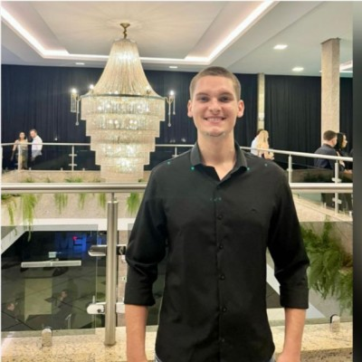

01Infrastructure &
DevOps
Disponível para oportunidades
CASSIO CORTELINI
DEV WEB • INFRA.
Olá, Eu sou o Cassio! Sou um desenvolvedor em formação!
Construo e desenvolvo minhas
ideias em projetos reais!

const nextStep = 'back-end'
<build />
from idea to interface
from idea to interface
⌖ Nova Bassano, RS
Role a tela para explorar
01 / 06
HTML✳CSS✳JAVASCRIPT✳✳APRENDIZADO
CONTÍNUO✳
HTML✳CSS✳JAVASCRIPT✳✳APRENDIZADO
CONTÍNUO✳
01Sobre mim
Código com curiosidade.
Aprender é o meu projeto principal.
Minha jornada começou criando interfaces e pequenos projetos para entender como boas ideias ganham forma na tela. Hoje, cada projeto é uma oportunidade de transformar estudo em algo real, útil e bem resolvido.
Tenho especial interesse por front-end, mas já estou expandindo meus horizontes para back-end e lógica de aplicações. Gosto de aprender fazendo, testar caminhos e evoluir um detalhe de cada vez.
Conheça meu GitHub ↗01Front-endInterfaces,
responsividade e experiências digitais.
02JavaScriptInterações, lógica
e projetos que saem do papel.
03Back-endPróximo território:
estrutura, dados e APIs.
02Infraestrutura
Tecnologia que sustenta
Infraestrutura aplicadas durante o
Dia-a-Dia
Tenho interesse em ambientes, automação, dados e observabilidade. É uma área que gosto bastante e na qual quero continuar me desenvolvendo.


03Projetos selecionados
Pequenos projetos.
Grandes aprendizados.
Uma seleção do que venho construindo enquanto avanço na jornada.
01
Calculadora de investimentos
Projeto principal e laboratório pessoal para transformar lógica financeira em uma ferramenta simples de usar.
02
Escala para enfermagem
Sistema web para gerar escalas mensais de enfermagem, distribuindo plantões e respeitando folgas, férias e feriados.
03
LC Estética Automotiva
Site estático criado para praticar estrutura, apresentação de conteúdo e os primeiros passos com JavaScript.
04Extensão curricular
Aprendizado que circula.
Conhecimento em movimento.
Um espaço para registrar experiências que conectam a formação acadêmica, a comunidade e a prática — para além dos projetos pessoais.
01
Projeto de extensão Curricular
2026
Minhas Experiências
Neste projeto muito intuitivo e focado, desenvolvi habilidades e noções diversas e o primeiro contato com a linguagem de Python e, principalmente, com o framework Django!
05Trajetória
Da interface à infraestrutura, camada por camada.
Minha trajetória acontece na prática: cada projeto amplia o que consigo construir e revela uma nova camada da tecnologia.
agora
Construindo base em infraestrutura
Explorando DevOps, ambientes, bancos de dados e observabilidade para entender o que sustenta uma aplicação.
experiência
Inclusão no Projeto Integrador
Participando de um projeto colaborativo voltado à tecnologia social e aplicando conhecimentos de desenvolvimento web.
em construção
Projetos que saem do papel
Da calculadora de investimentos à escala de enfermagem, transformo estudos em aplicações que resolvem problemas.
expansão
Automação para ganhar tempo
Com PowerShell e Python, exploro scripts, lógica e maneiras mais inteligentes de organizar rotinas.
ponto de partida
Primeiro contato com a web
HTML, CSS e JavaScript foram o começo para criar minhas primeiras interfaces e descobrir que código também pode ser visual.
06 / contato● online
Tem uma ideia?
Vamos construir
o próximo passo.
Se você quer trocar uma ideia sobre tecnologia, projetos ou oportunidades, meu WhatsApp está aberto.
Chamar no WhatsApp ↗